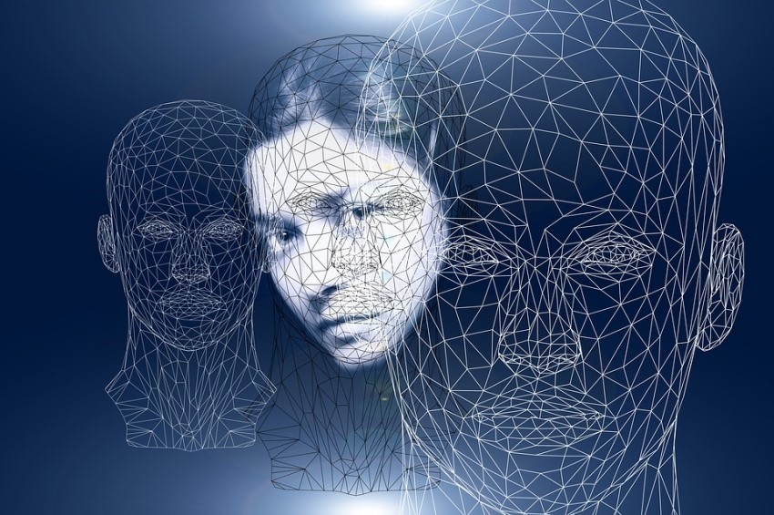

Until recently we used to ask whether machines can think. Today the question has become harder: “If a machine can write, hold a conversation, create images and make ever more complex decisions, what is it that makes us human?”
The discussion is no longer theoretical. Modern artificial intelligence systems are gaining more and more autonomy, while scientists, and people from within the industry itself, warn of the need for human oversight and safeguards. At the same time, the question of whether an artificial intelligence could become conscious has been opened up again.
In this new reality, Holy Scripture reminds us of something fundamental: man’s worth does not lie simply in his intelligence.
In Genesis we read: “So God created man in his own image, in the image of God created he him” (Genesis 1:27)
Man’s uniqueness, then, is not a matter of computing power. Man is a person, made in the image of God. He has freedom, conscience, responsibility, and the ability to love and to commune with his Creator.
And here lies the important distinction. We can build a machine that imitates human thought. But we cannot conclude, from its ability to produce clever answers, that it has acquired human consciousness or personhood. Similar behaviour does not prove the same kind of being.
There is, however, an even deeper concern: “What will happen if man begins to entrust to the machine not only his knowledge, but his judgement too?”
Imagine a future in which an artificial intelligence system decides, by analysing data, whether to start a war. Chooses a career for someone on economic and technical grounds alone. Even chooses a husband or wife by analysing photographs, CVs and preferences.
A future in which man finally loses his personal contact with God, and ends up taking his decisions and guidance for life from artificial intelligence. In which, at every crossroads of his life, he no longer trusts the voice of the Holy Spirit, as he once did.
The Lord tells us through the prophet Isaiah: “should not a people seek unto their God? for the living to the dead?” (Isaiah 8:19)
For only the Lord knows what is best for man’s soul, since: “There is a way that seemeth right unto a man, but the end thereof are the ways of death.” (Proverbs 16:25)
Technology is a product of human creativity and can become a great tool for good. But it is not our saviour. It cannot give direction and guidance to our lives.
So perhaps the great challenge of the age of artificial intelligence is not to create machines that are more like us. It is not to forget who we are. Children of God, made with great love so that we may have holy fellowship with our Creator.
For our worth does not lie in how fast we think, nor in how much we know. It lies in the fact that God loved us and gave His Son for us all... And He desires to direct and guide our lives.
And that is something no machine can offer us.
The “Christianity & Science” team
Published in the team's column in the newspaper “Christianity”, .